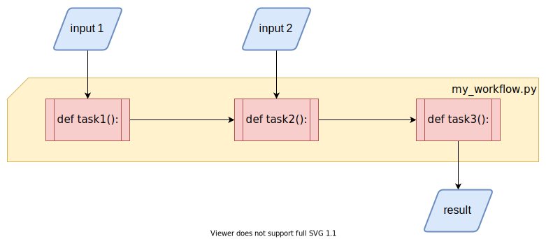
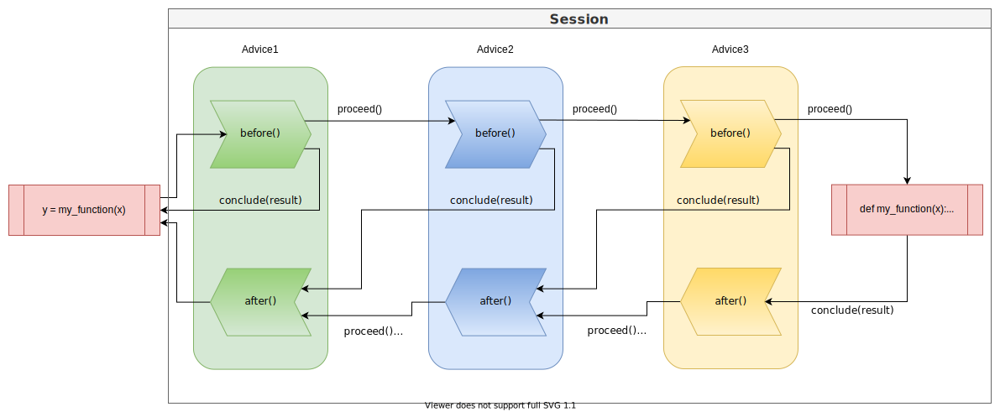

User guide🔗
This user guide can be used as a starting point for getting a deeper understanding of the inner workings of the bandsaw library. It is meant for users who want to learn about individual details or who plan to extend its features by developing own advices or extensions.
Concepts🔗
First we start with some high-level concepts that we use throughout the library. The purpose of this sections is to explain the structure of bandsaw and introduce a common set of terms that helps to talk about the underlying ideas
Workflow🔗
The fundamental basis in bandsaw is the idea of a workflow. We think of a workflow as a single python script, that contains code for all individual steps that are performed in a defined sequence.

The individual steps can have dependencies on external inputs and on results of other
steps, so that they form a directed acyclic graph. Those steps are referred to as
Tasks within bandsaw.
Tasks🔗
Tasks are pieces of code, that are used to process data. Task instances can be created
by calling the create_task(cls, obj) class
function in the Task class. At the moment, bandsaw
supports only free functions defined on module level as tasks.
Usually, tasks are defined by adding the @bandsaw.task
decorator to the code that should be executed as a task.
@bandsaw.task
def my_function(x):
return x
Each task has a unique task_id that is derived from the code that is executed. This can
be used to differentiate between different tasks.
Runs🔗
Tasks can take arbitrary arguments, which means we can have multiple executions of the
same task, that differ in the given arguments. This is captured by a
Run object, which encapsulates the arguments for a specific
task execution. Similar to the task_id, each run has a separate run_id that
differentiates between different runs.
Advice🔗
Objects that implement the Advice protocol are the
mechanism that allows bandsaw to influence the execution of the task. Each advice class
can implement two different methods,
before(self, session) and
after(self, session).
The before() method is called before the task is actually executed and allows the
advice to make changes to the way the task is executed, e.g. running the task on a
different system or returning a result early without executing the task at all.
The after() method is called after the task was actually executed and returned a
result. This allows an advice to make changes to the result or use it in a different way
than just returning it.
Both methods decide on what happens after by calling the appropriate method on the
current session, the sole argument both methods are taking.
Session🔗
A Session is the object, that manages the process
of executing a task for a specific run. It defines the different actions that advices
can take when their before() or after() methods are called.

When a task is being called within a workflow, a new Session object is instantiated
with the task, a run object containing the tasks arguments and a list of advices, called
the "advice chain", that should be used for advising the execution.
before() executing a task.🔗
The session calls the before() methods of all advices one after another in the order
that the advices are defined in the advice chain. Each Advice has to tell the session
to either
- continue with the next advice by calling
session.proceed()
or
- return early by skipping the following advices AND the actual task execution by
calling
session.conclude(result)and providing aResultthat should be used instead. After the advice has concluded with a result, the only advices whoseafter()methods will be called are the advices, that come before in the advice chain.
Executing the task🔗
If all advices of the advice chain decided to proceed(), the session will execute
that task and keep the value it returns. If an exception or error is raised during
the execution it will be stored in the Result
instance in the session.
after() executing a task🔗
After the task has been executed, the session begins to call the after() methods of
the advices in the REVERSED order from the advice chain. This means the advice that was
called last for before() is called first for after().
Now each advice can decide how to continue. Similar to before() there are two
possibilities:
- continue with the current result and the next advice by calling
session.proceed()
or
- return a different result and continue with that by calling
session.conclude(result)with a differentResultinstance. All following advices will be called usingafter()with a session containing the new result.
Once all advices have finished, the session will unpack the result and either return its value to the workflow or re-raise the error.
Serializing the session🔗
In order to move the execution of a task across different python interpreters, an advice
can use the capability of a Session to serialize its state to a stream and recreate it
at a later point in time or on a different platform.
For this the session contains two methods, save(stream)
and restore(stream). Both methods will
(de-)serialize the complete session including context, task, run and result. The only
thing missing here are the objects from the advice chain, since bandsaw can't enforce them
to be serializable. This means, that the same advice chain with the same name must be
available from the configuration at the time, the session is restored.
For an example, how transfer to a different python interpreter can be implemented, please
look at the implementation of the
SubprocessAdvice.
Configuration🔗
Bandsaw needs configuration to know which advices to apply to the individual tasks. This
configuration is given in form of an object of the
bandsaw.config.Configuration class. Just
creating a new Configuration object will create an empty, but working configuration,
that actually does nothing and executes tasks without any changes.
import bandsaw
configuration = bandsaw.Configuration()
The class has all the required methods to configure the different aspects of bandsaw.
Advice chains🔗
An advice chain is a sequence of objects implementing the Advice protocol, that should
be used for advising task executions. An advice chain is added to the configuration
using the add_device_chain(*advices, name='default')
method. It takes instances of Advice as positional arguments with an optional name
keyword argument.
...
configuration.add_device_chain(
bandsaw.advices.logging.LoggingAdvice(),
)
Each advice chain has a name, that can be used to choose which chain to use per task.
If no name is given, the chain with name 'default' is configured. Already existing
chains will be overwritten. So if you configure two different advice chains, with no or
the same name, the latter will replace the former.
Serializer🔗
In order to transfer tasks between different python interpreters, bandsaw needs the
capability to serialize tasks, their arguments and internal classes. For this bandsaw
defines a Serializer base
class, that can be implemented to support different types of serialization.
Which serializer to use, can be configured as part of the configuration:
from bandsaw.serialization.json import JsonSerializer
...
configuration.set_serializer(JsonSerializer())
Bandsaw comes with two different serialization formats:
Pickle🔗
The PickleSerializer has
the advantage, that it works out of the box with most standard python types. It uses
the standard python pickle library
to serialize python objects and should work across different python versions. If custom
types need to be serialized (e.g. as part of some arguments to a task), that don't work
with pickle, support for pickle can easily be
added.
One disadvantage of pickle is that sometimes the serialized representation of a value
is not unique. Since bandsaw uses the serialized form of arguments to derive the
run_id of a run, this can lead to inconsistencies, when the same arguments can lead
to different run_ids.
Json🔗
The JsonSerializer uses JSON as
format for the serialized data. The standard json
library supports only primitive types like strings, dict, int etc. so for all complex
types one need to explicitly add code to serialize them. Bandsaw implements support for
serializing exceptions, tuples and all of its internal classes, so that they can be
serialized to json.
To serialize a custom type to json, bandsaw offers two options:
Implement SerializableValue🔗
The easiest way to make your custom type json serializable is to inherit from the
SerializableValue base class
and implement the abstract methods serialized(self) and deserialize(cls, values).
serialized(self) must return a value that is json serializable (e.g. a dict
containing only primitives). The class method deserialize(cls, values) is given this
value and returns a new instance of the class.
Create a ValueSerializer🔗
If the custom type can't be changed, there is the option to create a new
ValueSerializer class that
can serialize this type. It consists of 3 different methods:
can_serialize_value(self, value)
Has to return True if value is of the type that this particular serializer can serialize.
serialize_value(self, value)
Has to return the serialized representation of the type, consisting only of primitives that are json serializable.
deserialize_value(self, representation)
Has to return a new instance of custom_type from its serialized representation.
Finally, the new ValueSerializer needs to be added to the json serializer as part
of the configuration:
configuration.serializer.value_serializers.append(MyValueSerializer())
How to use bandsaw🔗
Now with some knowledge about the different concepts within bandsaw at our hands, let's dive into the topic of how to put the library to good use.
Install the library🔗
Use stable release from PyPI🔗
All stable versions of bandsaw are available on PyPI
and can be downloaded and installed from there. The easiest option to get it installed
into your python environment is by using pip:
pip install bandsaw
Use from source🔗
Bandsaw's Git repository is available for everyone and can easily be cloned into a new repository on your local machine:
$ cd /your/local/directory
$ git clone https://gitlab.com/kantai/bandsaw.git
$ cd bandsaw
If you want to make changes to library, please follow the guidance in the README.md on how to setup the necessary tools for testing your changes.
If you just want to use the library, it is sufficient to add the path to your local
bandsaw repository to your $PYTHONPATH variable, e.g.:
$ export PYTHONPATH="$PYTHONPATH:/your/local/directory/bandsaw"
Defining the individual tasks of your workflow🔗
In order to use bandsaw in your workflow, you first have to import its package.
import bandsaw
...
Splitting up your workflow into individual tasks can be done by annotating the
individual functions with the bandsaw.task decorator:
@bandsaw.task
def my_function(x):
...
return x
The decorator can be only applied to free functions in the current implementation, so it isn't possible to decorate methods of classes for now:
class MyClass:
@bandsaw.task
def my_method(self, x):
return x
Configure bandsaw🔗
Bandsaw loads its configuration automatically at the time it is needed. This happens by
dynamically importing a python module that contains an instance of the class
Configuration assigned to the variable
configuration.
import bandsaw
configuration = bandsaw.Configuration()
Bandsaw expects the configuration to be found in the python module bandsaw_config. The
name of the module can be changed in two ways:
-
Set the
BANDSAW_CONFIGenvironment variable to a different module name. Bandsaw reads the name of the module containing the configuration from this variable if it is set. So by setting it to e.g.my_configit will importmy_configand take the configuration from it instead. -
Add an additional keyword argument to the
@taskdecorator that contains the name of the configuration to use for this task:By adding the@bandsaw.task(config='my_config_module') def my_function(x): ... return xconfigkeyword argument we can choose the configuration we want to use per task.
The existence of the configuration is checked as soon as the decorator is being applied. If no configuration could be loaded, an error is raised, usually at module import time.
Choose the advice chain🔗
Each task can define, which advice chain should be used. This can be done, by adding a
keyword argument chain to the task decorator:
@bandsaw.task(chain='my_chain')
def my_function(x):
...
return x
If no chain exists with the specified name, a
KeyError is raised.
Extending bandsaw🔗
Bandsaw is extensible and allows developers to add new functionality in various ways:
Implementing custom advices🔗
Advices are the main building blocks for adding new functionality. Implementing an advice is easy, the only necessary work is to adhere to a protocol and follow some simple rules.
The protocol is defined in Advice and consists
of two methods, before(self, session) and
after(self, session).
- Advices have to call the session.
When called via
before()andafter(), the advice is responsible for telling thesessionhow to continue. They must call once eithersession.proceed()orsession.conclude(). Failure to do so, will lead to aRuntimeErrorraised by the session. - Advices shouldn't keep state themselves.
Advice instances are used for multiple tasks. Therefore, their implementation shouldn't
store any task specific state themselves. If task specific state is necessary, it can be
easily added to the
contextof the session. - Advices may be instantiated multiple times and on different machines.
Everytime a task is transferred to a different python interpreter, its configuration and
with it the configured advices are instantiated again, even if they aren't actually
called. Therefore, advices shouldn't do much work or interact with their environment
at instantiation time, but only when they are actually called via
after()orbefore(). Usually they can assume that both methods are called in the same environment for the same task.